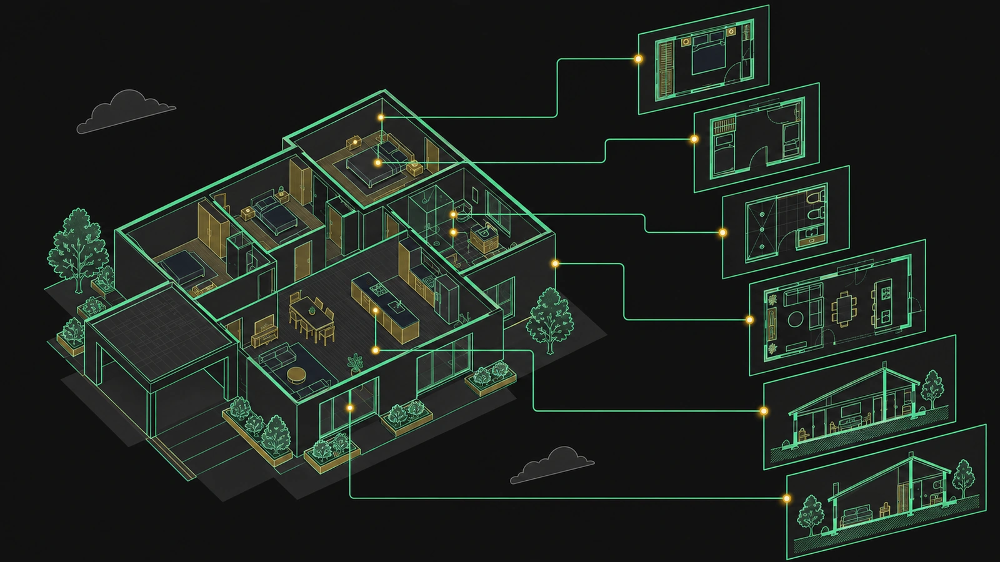
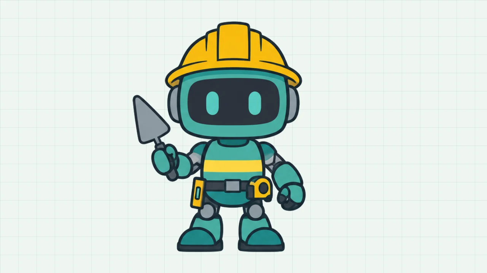
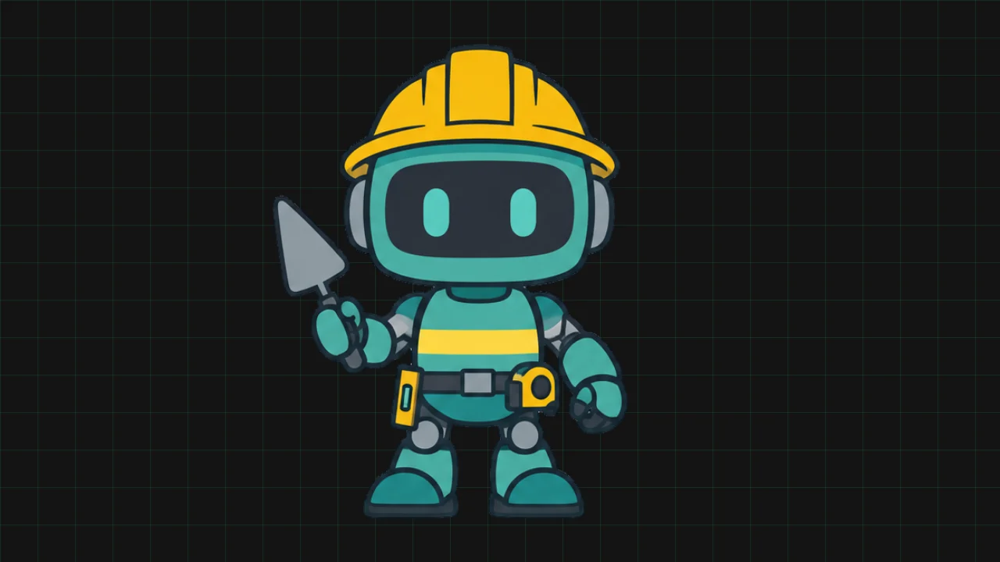
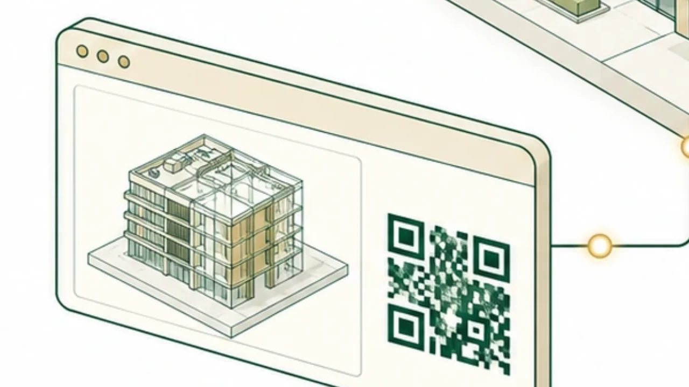
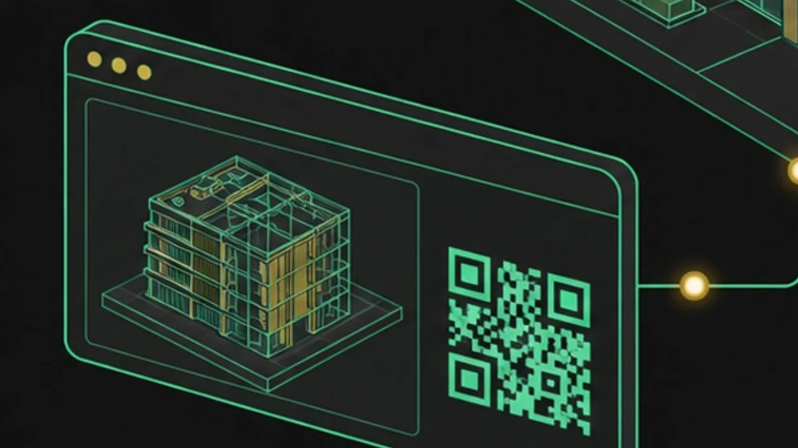
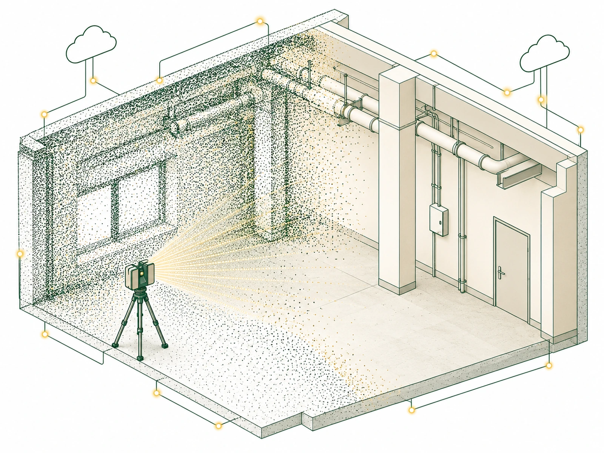
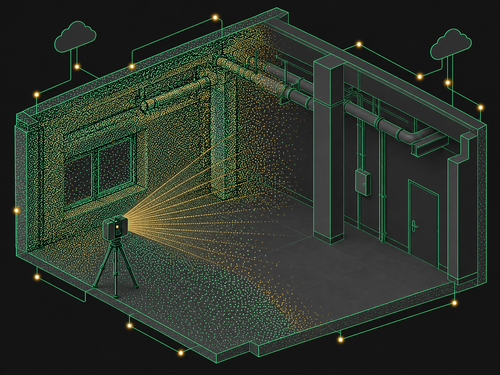
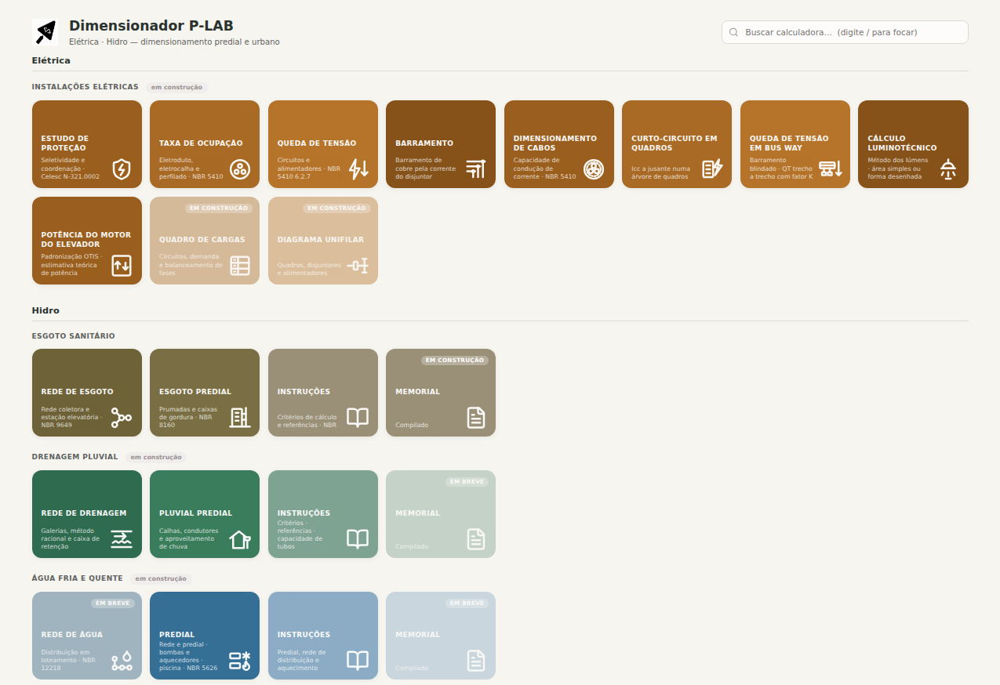

Software para quem projeta
Plugins para Revit, Navisworks e Civil 3D, IA no modelo, nuvem de pontos, visualizador web e gestão do escritório de projetos.
Prontas para usar no seu projeto
Produtos lançados e com suporte da P-LAB. Comece pelo add-in para Revit, que é gratuito.
O Revit fazendo a parte chata do projeto
O add-in gratuito da P-LAB: baixe e use todas as ferramentas, sem cartão e sem prazo.
- Gerar vistas, gerenciar e exportar pranchas em lote
- Cota automática, legendas de DXF e PDF e tabelas para o Excel
- MEP: taxa de ocupação, transferência de circuitos e queda de tensão


A IA que trabalha no seu modelo do Revit
Peça em português; ele mostra um cartão com o que vai fazer e você aplica. Tudo tem Desfazer.
- Automatiza os add-ins que você já usa e salva o passo a passo para o escritório repetir
- Modela a partir de DWG, PDF ou foto e cria famílias (Pleno)
- Júnior R$ 160 e Pleno R$ 360 por mês, com o Viewer Pro incluso


Revisão BIM no navegador
O cliente e a obra abrem o modelo pelo link, sem instalar nada.
- IFC, PDF, DXF e DWG no celular ou no computador
- Comparação de revisões, medidas e pendências no modelo
- Grátis com 2 GB; Viewer Pro com 10 GB por R$ 19,90 por mês


A nuvem do scanner direto no Revit
Sem ReCap e sem conversão: abre E57, LAS, LAZ, PTS, XYZ e RCP/RCS no Revit 2025 e 2026. Vincular, ver e colorir a nuvem é grátis; o resto é o módulo pago.
- Níveis pelos pisos detectados e recortes por pavimento
- Coordenadas, conferência da obra contra o modelo e clash
- Modelagem do existente a partir dos pontos


Ferramentas para Navisworks e Civil 3D
Em desenvolvimento e vendidas à parte do add-in gratuito. Fale com a P-LAB para comprar ou acompanhar o lançamento.
Clash Works
 Navisworks Em desenvolvimento
Navisworks Em desenvolvimento
Roda os testes de interferência em lote, agrupa os conflitos por nível, eixo e disciplina, e entrega relatório HTML e BCF que abre direto no Revit.

Quantificação para o P-LAB OS
 Navisworks Em desenvolvimento
Navisworks Em desenvolvimento
Importa o seu catálogo de serviços para o Quantification e manda as quantidades do modelo para o módulo de custos do P-LAB OS.

Verificador de traçado
 Civil 3D Em desenvolvimento
Civil 3D Em desenvolvimento
Confere raio, transição, superelevação e rampas de cada curva contra a norma, recalcula os valores do Civil 3D e aponta o que precisa de revisão.

Distribuição de terraplenagem
 Civil 3D Em desenvolvimento
Civil 3D Em desenvolvimento
Calcula a melhor origem e destino para cada corte e aterro, com empréstimos e bota-foras, e entrega o quadro de distribuição de terras.

Quer uma dessas no seu escritório?
Conte o que você precisa e em qual versão do Navisworks ou do Civil 3D a equipe trabalha. A gente monta a proposta.
Software para o escritório de projetos
Além das automações, a P-LAB desenvolve aplicativos para o dia a dia do escritório. São dois: o P-LAB OS, para a gestão, e o P-LAB Dimensions, para o cálculo.
P-LAB OS
Gestão do escritório de projetos no navegador, com uma conta só para a equipe.
- Início — a semana de cada pessoa, o cronômetro de horas por projeto e disciplina, e o desempenho: horas lançadas e consumo do previsto.
- Projetos — carteira de projetos e propostas, com funil de vendas e preço sugerido a partir do custo real da equipe.
- Viewer — modelos IFC, PDF, DXF e DWG no navegador, ligados ao mesmo projeto. Conheça o P-LAB Viewer.
- Dimensions — os dimensionadores de hidráulica e elétrica, abertos direto do menu. Veja o P-LAB Dimensions logo abaixo.
P-LAB Dimensions
Dimensionamento de instalações prediais e redes no navegador, sem instalar nada. Os dados da obra entram uma vez e valem para todas as calculadoras.
- Esgoto — rede coletora com estação elevatória (NBR 9649) e esgoto predial: prumadas, ventilação, subcoletor e caixas de gordura (NBR 8160).
- Drenagem — rede de galerias pelo método racional, com caixa de retenção, e pluvial predial: calhas, condutores e aproveitamento de chuva (NBR 10844 e NBR 15527).
- Água fria em construção — pressão da rede ao ramal do apartamento, VRP e esquema vertical em DXF (NBR 5626).
- Elétrica em construção — estudo de proteção, cabos, queda de tensão, curto-circuito, barramento, bus way, eletroduto, luminotécnico e elevador.
- Entregas — planilha em Excel, PDF e arquivo para o Revit, com o seu logo e o responsável técnico.
Vem junto com o P-LAB OS e com os planos do P-LAB Assistant, na mesma conta.

O plugin do jeito que o seu escritório trabalha
Parte do que já existe
Começamos pelos botões do P-LAB para Revit e ajustamos comportamento, parâmetros e nomenclatura ao padrão da sua equipe.
Seu template, suas famílias
O plugin trabalha em cima do template e das famílias que o escritório já usa, e entrega do jeito que o seu cliente pede.
Licença vitalícia
Licença por código, que funciona sem servidor e sem conta Autodesk. Não é assinatura: fica com o escritório.
Plugin adaptado ao seu escritório
Partimos da base que já existe e ajustamos ao fluxo do escritório — comportamento, parâmetros, nomenclatura, template e famílias. Licença vitalícia por código, que funciona sem servidor e sem conta Autodesk. Valor fechado em proposta, conforme o escopo.
Instale de graça e veja funcionando
A instalação leva menos de dois minutos e todas as ferramentas já ficam disponíveis, sem cartão e sem prazo de teste. Se ele ajuda no seu dia, você pode apoiar a P-LAB.
Baixar gratuitamente Ver todos os botões Últimos instaladores